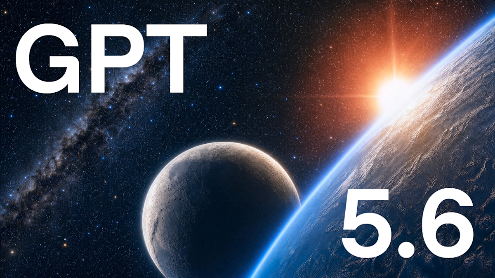
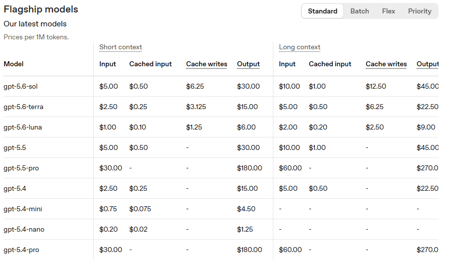
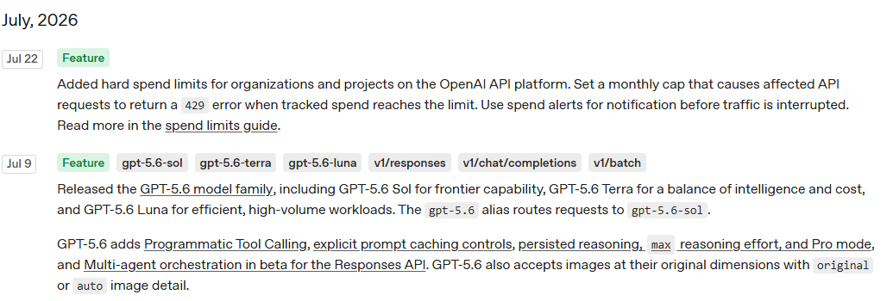

GPT-5.6 Sol·Terra·Luna 차이 정리 — GPT-5.5랑 뭐가 다른가요
OpenAI가 2026년 7월 9일 GPT-5.6을 공개했어요. GPT-5.6은 하나가 아니라 Sol·Terra·Luna 세 모델이에요. 학습한 정보의 마지막 시점은 더 최신으로 바뀌었어요. 최상위 Sol의 개발자용 가격은 GPT-5.5와 같고요. ChatGPT 앱의 기본 모델은 바뀌지 않았어요.
이름부터 낯설어서 어려워 보이는데, 나눠서 보면 간단해요. 이름 뜻 → 세 모델 차이 → 가격 → 앱에서 달라지는 점 순서로 정리해 볼게요. ChatGPT 앱만 쓰신다면 'ChatGPT 앱에서는 뭐가 달라지나요' 부분만 보셔도 돼요.

OpenAI가 GPT-5.6 발표문에 올린 공식 대표 이미지예요.
이미지 출처: OpenAI 공식 발표문 — GPT-5.6 · 네이버 본문엔 받아서 재업로드 권장
GPT-5.6, 이름이 무슨 뜻인가요
GPT-5.6은 숫자가 세대를, Sol·Terra·Luna가 성능 등급을 가리키는 이름이에요. 다음 세대가 나와도 Sol·Terra·Luna라는 등급 이름은 그대로 이어져요. 공식 발표문에는 이렇게 적혀 있어요.
"The number identifies the generation, while Sol, Terra, and Luna are durable capability tiers that can advance on their own cadence." (OpenAI 공식 발표문, 2026.07.09 발표)
숫자는 세대를 나타내고, Sol·Terra·Luna는 각자의 속도로 발전하는 지속적인 성능 등급이라는 뜻이에요.
- 숫자(5.6) — 모델 세대를 가리켜요.
- Sol·Terra·Luna — 세대와 무관하게 이어지는 능력 등급이에요.
Sol·Terra·Luna 뭐가 다른가요
GPT-5.6의 세 모델은 성능·속도·가격이 각각 달라요. 위로 갈수록 똑똑하고, 그만큼 비싸요.
- Sol — 세 모델 중 성능이 가장 높아요. 복잡한 추론과 코딩에는 Sol부터 쓰라고 공식 문서가 안내해요.
- Terra — 성능과 비용의 균형을 잡은 중간 등급이에요.
- Luna — 가장 빠르고 저렴한 등급이에요.
| 모델 | 모델 ID | 입력 $/100만 토큰 | 출력 $/100만 토큰 |
|---|---|---|---|
| Sol | gpt-5.6-sol | $5 | $30 |
| Terra | gpt-5.6-terra | $2.50 | $15 |
| Luna | gpt-5.6-luna | $1 | $6 |
표: Sol·Terra·Luna 가격 차이 (2026.07.23 기준, 공식 모델 카탈로그·가격 페이지 · 컨텍스트·최대 출력·지식 컷오프는 세 모델 모두 동일)
가격 말고 나머지 사양은 세 모델이 같아요. 표에 나오는 용어 세 가지만 풀어 볼게요.
토큰은 AI가 글을 잘라서 처리하는 최소 단위예요. 글자 수와 딱 맞아떨어지지는 않아요. 가격도 이 토큰을 100만 개 단위로 매겨요.
컨텍스트는 AI가 한 번에 다룰 수 있는 분량이에요. 세 모델 모두 1.05M(105만) 토큰으로 같아요. GPT-5.5·GPT-5.4도 1.05M라 여러 세대째 그대로고요.
지식 컷오프는 그 모델이 학습한 정보의 마지막 시점이에요. GPT-5.5는 2025-12-01, GPT-5.6은 2026-02-16이에요. 여기가 이번에 바뀐 부분이에요.
가격이 얼마나 바뀌었나요
GPT-5.6 Sol은 GPT-5.5와 가격이 같아요. 100만 토큰 기준으로 입력 $5·출력 $30이에요.
여기서 말하는 가격은 API 요금이에요. API는 개발자가 자기 프로그램에 AI를 연결해 쓰는 통로예요. ChatGPT 앱 구독료와는 별개고요.
Terra 가격은 GPT-5.4와 같아요. Luna는 입력 $1·출력 $6이에요. GPT-5.4-mini(입력 $0.75·출력 $4.50)보다는 비싸요. GPT-5.4보다는 저렴해요.
| 모델 | 입력 $/100만 토큰 | 출력 $/100만 토큰 | 컨텍스트(토큰) |
|---|---|---|---|
| GPT-5.6 Sol | $5 | $30 | 1.05M |
| GPT-5.5 | $5 | $30 | 1.05M |
| GPT-5.5-pro | $30 | $180 | 1.05M |
| GPT-5.6 Terra | $2.50 | $15 | 1.05M |
| GPT-5.4 | $2.50 | $15 | 1.05M |
| GPT-5.6 Luna | $1 | $6 | 1.05M |
| GPT-5.4-mini | $0.75 | $4.50 | 400K |
| GPT-5.4-nano | $0.20 | $1.25 | 400K |
표: GPT-5.6과 이전 세대 API 가격 비교 (100만 토큰 입력/출력, 2026.07.23 기준 · 컨텍스트가 1.05M인 모델은 입력이 272K 토큰을 넘으면 입력 2배·출력 1.5배로 계산돼요)

OpenAI 공식 가격 페이지의 Flagship models 표(2026.07.24 캡처)
이미지 출처: OpenAI 공식 가격 페이지
OpenAI는 가격은 그대로 두고 성능을 올렸다는 점을 강조해요. 지식노동 평가(문서 작성·분석 같은 사무 업무를 얼마나 잘하는지 보는 평가예요)에서는 Terra가 GPT-5.5보다 낮은 비용으로 앞섰다고 밝혔어요. Luna는 GPT-5.5의 최고 성능에 가깝고 비용은 절반 이하라고 밝히고요. 다만 둘 다 OpenAI가 직접 매긴 점수예요.
| 항목 | GPT-5.5 | GPT-5.6 |
|---|---|---|
| 지식 컷오프 | 2025-12-01 | 2026-02-16 |
| 컨텍스트 | 1.05M | 1.05M(그대로) |
| 최상위 모델 가격(100만 토큰) | $5 / $30 | $5 / $30(그대로, Sol 기준) |
| Agents' Last Exam | 46.9% | 52.7% |
| ChatGPT 앱 기본 모델 | GPT-5.5 Instant | GPT-5.5 Instant(그대로) |
표: GPT-5.5 → GPT-5.6 달라진 것 (2026.07.23 기준 · Agents' Last Exam은 OpenAI 자체 비교)
ChatGPT 앱에서는 뭐가 달라지나요
ChatGPT 앱 기본 모델은 지금도 GPT-5.5 Instant예요. GPT-5.6이 나왔다고 앱 기본값이 바뀌지 않았어요.
대신 유료 플랜의 추론 옵션이 GPT-5.6 Sol로 바뀌었어요. 추론 옵션은 답을 바로 내놓지 않고 더 오래 생각하게 하는 설정이에요. ChatGPT에서 Medium·High·Extra High라는 이름으로 고르는 그 항목이고요.
공식 Help Center 문서 원문은 이렇게 적혀 있어요.
"GPT-5.6 Sol now powers the Medium, High, and Extra High reasoning options on eligible plans, while GPT-5.6 Sol Pro powers Pro." (OpenAI Help Center, 2026.07.23 확인)
해당 플랜에서 Medium·High·Extra High 옵션은 GPT-5.6 Sol이, Pro 옵션은 GPT-5.6 Sol Pro가 맡는다는 뜻이에요. GPT-5.6 Sol Pro는 어렵고 오래 걸리는 작업에 쓰는 최상위 옵션이고요.
문서 FAQ는 "GPT-5.6이 GPT-5.5 Instant를 대체하나요?"라는 질문에 "아니요(No)"라고 답해요.
| 플랜 | Medium | High | Extra High | Pro 옵션 |
|---|---|---|---|---|
| Free / Go | ✕ | ✕ | ✕ | ✕ |
| Plus | ○ | ○ | ✕ | ✕ |
| Pro / Business / Enterprise | ○ | ○ | ○ | ○ |
표: ChatGPT 표준 대화창 기준 GPT-5.6 추론 옵션 이용 가능 여부 (2026.07.23 기준 · Codex에서는 Free·Go도 Terra 이용 가능)
표의 Pro 옵션 열은 GPT-5.6 Sol Pro가 맡아요.
순차 배포 중이라 아직 선택 메뉴에 안 보일 수도 있어요. Free·Go 플랜은 표준 대화창 기준으로 GPT-5.6 추론 옵션이 열리지 않아요. Go의 Thinking도 GPT-5.6 Sol이 아니고요.
대신 Codex에서는 Free·Go도 GPT-5.6 Terra를 쓸 수 있어요. Codex는 코딩 작업을 맡기는 도구예요.
ChatGPT의 추론 옵션 선택 화면(계정 플랜에 따라 보이는 항목이 달라요)
새로 생긴 기능들
GPT-5.6에 새로 붙은 기능은 대부분 개발자용이에요. ChatGPT 앱만 쓰신다면 이 부분은 넘기셔도 괜찮아요. 공식 체인지로그에 올라온 항목을 쉬운 말로 풀어 볼게요.
- 프로그램형 도구 호출(Programmatic Tool Calling) — 모델이 직접 코드를 짜서 여러 도구를 엮어 부르는 방식이에요.
- 명시적 프롬프트 캐시 컨트롤 — 같은 지시문을 저장해 두고 다시 쓸지, 개발자가 직접 정하는 기능이에요.
- 추론 이어쓰기(Persisted Reasoning) — 앞에서 한 생각의 과정을 다음 요청에서 이어 쓸 수 있어요.
- Max 추론 강도 — 모델이 얼마나 깊게 생각할지 정하는 단계 중 가장 깊은 쪽이에요. 그 위의 ultra 단계는 ChatGPT Work·Codex 쪽 설정이고요. ChatGPT Work는 더 길고 복잡한 작업을 맡기는 에이전트예요. API에서는 Responses API 멀티에이전트 베타로 비슷하게 구성해요.
- Pro mode — 답 하나를 내놓기 전에 연산을 더 돌리는 API 실행 모드예요. 위의 추론 강도와는 별개 설정이에요.
- 여러 에이전트에 나눠 맡기기(멀티에이전트 오케스트레이션, 베타) — 한 작업을 여러 AI가 나눠 처리해요. Responses API(대화형 응답 API)에 베타로 열렸어요.

OpenAI 공식 체인지로그의 2026년 7월 9일 GPT-5.6 항목(2026.07.24 캡처)
이미지 출처: OpenAI 공식 체인지로그
벤치마크 성적은 어떤가요
Agents' Last Exam에서 Sol이 GPT-5.5·Claude Fable 5보다 앞섰다고 OpenAI가 밝혔어요. Agents' Last Exam은 UC Berkeley RDI가 만든 평가예요.
| 모델 | Agents' Last Exam |
|---|---|
| GPT-5.6 Sol | 52.7% |
| GPT-5.5 | 46.9% |
| Claude Fable 5 | 40.5% |
표: OpenAI 공식 발표문 비교표 기준 Agents' Last Exam 점수 (8개 모델 중 3개 발췌, OpenAI 자체 비교, 2026.07.23 확인)
발표문 본문에는 53.6도 나오는데, 두 값의 측정 기준은 따로 안 나와 있어요. 벤더가 낸 비교라 참고만 하시면 돼요.
자주 묻는 질문
Q. gpt-5.6이라는 별칭으로 API를 호출하면 어떤 모델이 실행되나요?
공식 모델 카탈로그 기준으로 gpt-5.6 별칭은 gpt-5.6-sol로 자동 연결돼요. 등급을 따로 적지 않으면 Sol이 실행된다는 뜻이에요.
Q. ChatGPT 표준 대화창에서 Terra나 Luna를 직접 고를 수 있나요?
아니요. 표준 대화창엔 없고, ChatGPT Work(Plus 이상)·Codex·API에서만 골라 쓸 수 있어요.
Q. GPT-5.6 추론 한도를 다 쓰면 어떻게 되나요?
공식 문서는 추론 한도에 도달하면 ChatGPT가 GPT-5.4 Thinking mini로 이어갈 수 있다고 안내해요.
참고한 곳
· OpenAI 공식 발표문 — GPT-5.6
· OpenAI 공식 모델 카탈로그
· OpenAI 공식 가격 페이지
· OpenAI 공식 체인지로그
· OpenAI 공식 Help Center — GPT-5.6 in ChatGPT
하루 정리
· GPT-5.6은 숫자가 세대, Sol·Terra·Luna는 능력 등급이에요
· API 가격은 등급별로 최대 5배 차이가 나요(표 참고)
· ChatGPT 앱 기본은 여전히 GPT-5.5 Instant, Sol은 유료 추론 옵션으로 들어와요
· 새로 생긴 기능은 대부분 개발자용이고, 앱 쪽 변화는 유료 추론 옵션이 Sol로 바뀐 것이에요
API를 직접 쓰는 분이면 가격표부터, ChatGPT 앱만 쓰는 분이면 기본 모델이 안 바뀌었다는 점부터 챙기시면 돼요.